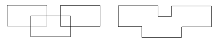

Options are available
for combining multiple objects.
Procedure
- To unite all selected
intersecting bodies into one body, select the bodies then choose . Figure 1 shows a typical result.
Figure 1. Three Bodies United
- To deletes all but the
intersecting regions of a number of bodies, select the bodies then
choose . Figure 2 shows a typical result.
Figure 2. Two Bodies Intersected
- To subtracts all selected
intersecting bodies from the first selected body, select the bodies
then choose . Figure 3 shows a result where three bodies have
been replaced by a single body. The middle body was the first to
be selected, subsequent selected bodies have been subtracted from
that body.
Figure 3. Subtracted Bodies